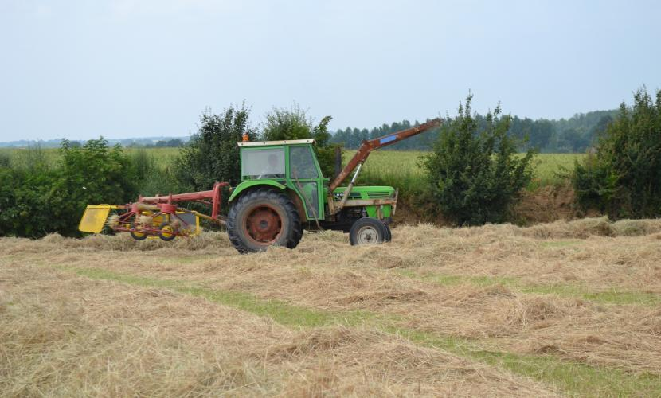
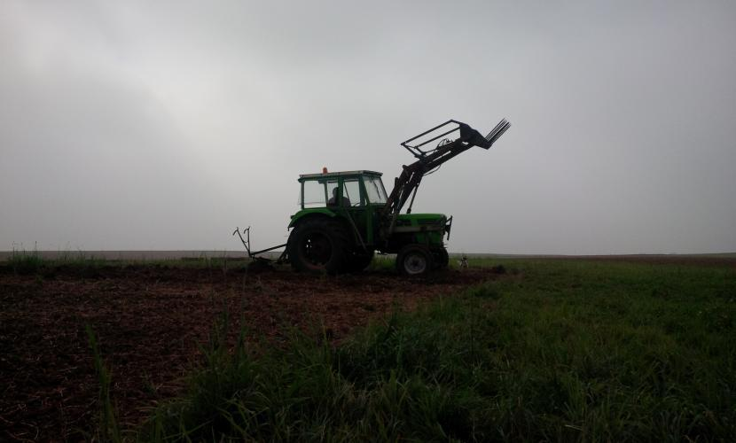
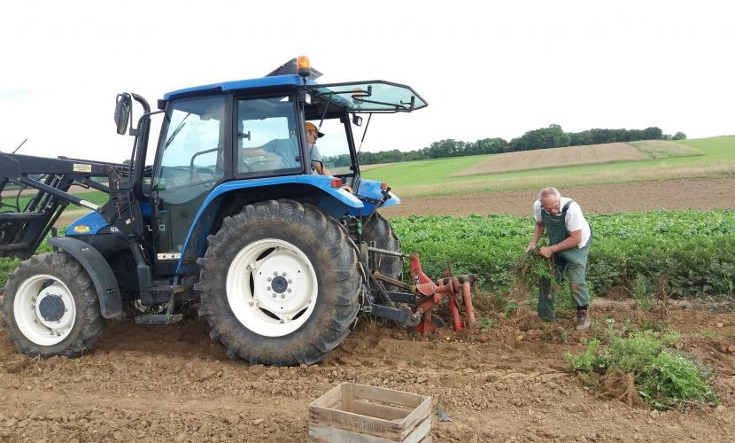
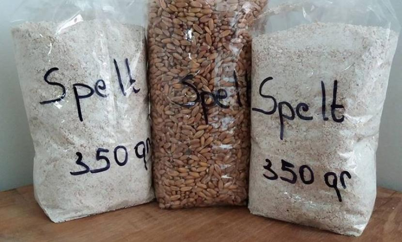

Biologisch kleinschalig
Bewust en zelfvoorzienend leven volgens de seizoenen. Gezonde dagelijkse voeding, natuur- en diervriendelijk geteeld, recht van het veld tot bij jou.

Wij zijn Liesbeth & Gert
Ten opzichte van de grote agrarische bedrijven werken we in alles wat we doen (varkens, koeien, legkippen, akkerbouw) op zeer kleine schaal. Vandaar 't Kleinhof.
Ons basisprincipe is bewust en zelfvoorzienend leven volgens de seizoenen: gezonde voeding in samenwerking met de stroom van de natuur. Wat begon als een klein moestuintje, groeide stap voor stap uit tot een boerderij waar we het jaar rond zelfgekweekte groenten en fruit eten.
Liesbeth & GertOp de boerderij
Bij alles staat voorop dat we op een natuur- en diervriendelijke manier werken. De akkerbouwpercelen, weides, kippen en koeien zijn bio-gecertificeerd (TÜV Nord Integra).
Bio-weide kippen
We hebben gekozen voor het houden van bio-weide kippen omdat we deze dieren op een biologisch verantwoorde manier willen verzorgen.
De koeien
Hereford en Aberdeen Angus. Beide rassen kunnen met enkel gras en hooi gehouden worden.
De varkens
Berkshire varkens zijn het oudste Engelse varkensras, van origine gefokt in het graafschap Berkshire.
De akkerbouw
Baktarwe en spelt, aardappelen, ajuinen en grasbufferstroken voor het hooi van de koeien.
De hoogstamweide
De hoogstamweide voorziet ons en de rest van de familie van kersen, pruimen, peren en appels.
De bijen
Onze bijen wonen in zelfgemaakte Warrékasten: kleine bakken die hoog gestapeld worden.
Onze moestuin
Op een beperkte oppervlakte moestuin en een serre kweken we zo goed als het ganse jaar door eigen groenten.
De aardappelen
Nicola, Vitabella en Alouette, geteeld op onze eigen akkers.




Ontdek onze zorg-boerderij
Een warme, rustige plek in het ritme van de seizoenen.
Wil je meer weten over de zorg-boerderij? Liesbeth vertelt er je graag alles over.
Laat je meeproeven
Oorspronkelijk stond het zelfvoorzienend zijn centraal, maar door de vele positieve reacties willen we in de mate van het mogelijke anderen laten meeproeven van onze producten.
Om het wat makkelijker te maken om te komen kopen of bestellen, hebben we een geïsoleerde kast gemaakt die bij ons tegen de buitengevel staat: de Bio-kast. Je reserveert online en betaalt bij afhaling.
Blijf op de hoogte
Ons productaanbod verschilt sterk per seizoen. Via de nieuwsbrief blijf je altijd op de hoogte van nieuwe producten in ons aanbod.